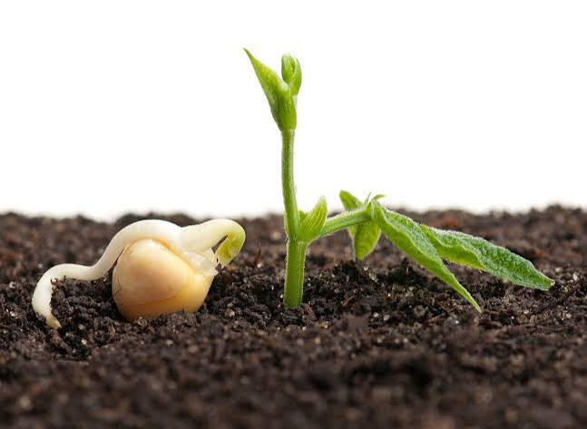
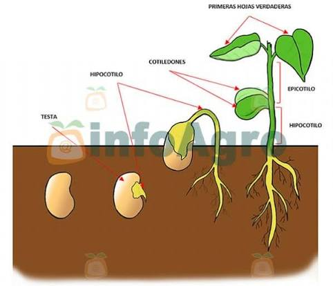
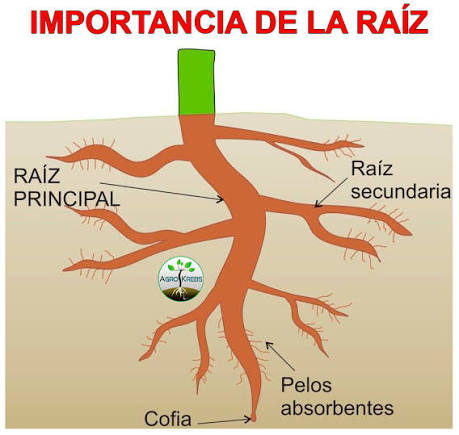
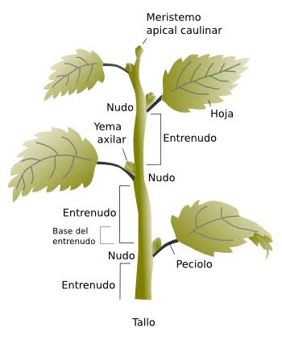
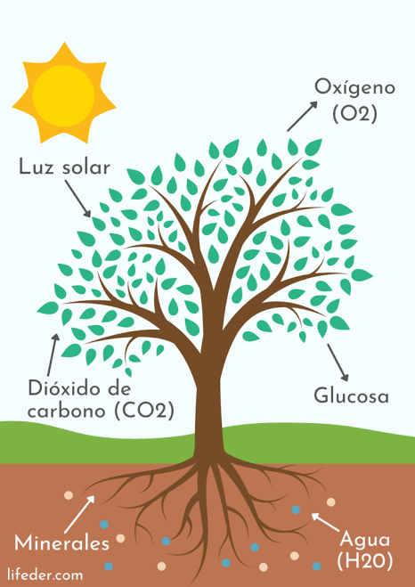
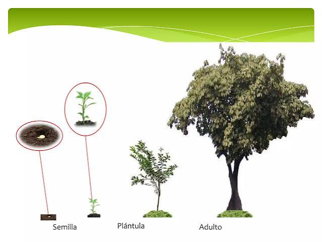

Una aventura interactiva para descubrir la magia de la naturaleza.

Todo comienza con una pequeña semilla que parece estar durmiendo plácidamente bajo la tierra oscura y protectora. Aunque por fuera parece inactiva, en su interior guarda un diminuto embrión y todo el alimento necesario para iniciar su gran viaje.

Cuando llueve o la regamos, la tierra se humedece. La semilla absorbe esa agua como si fuera una esponja. Su cubierta protectora, llamada testa, se blande y se rompe, despertando al diminuto embrión que llevaba tanto tiempo esperando.

Lo primero que asoma de la semilla es la radícula, que se convierte en la primera raíz. Esta pequeña exploradora viaja siempre hacia abajo en busca de firmeza, agua y nutrientes minerales esenciales que están escondidos en el suelo.

Mientras la raíz baja, otra parte del embrión llamada plúmula toma valor y crece en sentido contrario, desafiando la gravedad para buscar la superficie. Al salir a la luz, despliega sus primeras hojitas llamadas cotiledones.

¡Las hojas son pequeñas fábricas verdes! Gracias a un proceso llamado fotosíntesis, la planta capta la luz del sol, toma dióxido de carbono del aire y agua de las raíces para fabricar su propio alimento y crecer fuerte.

Con el paso del tiempo, los cuidados del sol y el agua, la pequeña semilla se ha convertido en una hermosa planta adulta. Pronto florecerá, producirá frutos y nuevas semillas, asegurando que la vida continúe.
Unidad Educativa: Unidad Educativa Francisco Jose de Caldas
Creador: Jean Ariel Romero Loor
Curso y Paralelo: 3 "C"
Docente: Ulpiano Estrella
Año Lectivo: 2026 - 2027